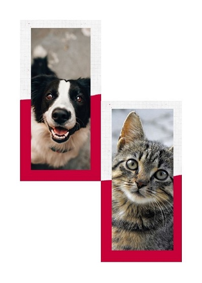

Informacion de adopcion
Descubre como adoptar una mascota
Requisitos de adopcion
- Fotocopia de C. I. y la persona tiene que ser mayor de 21 años.
- Número de teléfono fijo o celular.
- Fotocopia de la última factura de luz o agua.
- Cubrir el 50% del costo de 2 vacunas (decavalente en perros y triple felina en gatos) y una cirugía de esterilización.
- Documento que demuestre que la persona es propietaria del domicilio pxdonde vivirá la mascota o, en caso de alquiler, que el arrendatario permite residir con animales.

Lo que debes saber para adoptar una mascota
- La asociación tiene el derecho de no entregarte la mascota si no se cumples los requisitos exigidos.
- Durante el régimen de acogida se realizará un seguimiento para ver qué tal se adapta la mascota a la familia y comprobar que se cumple el compromiso adquirido.
- Si te encuentras un animal abandonado existe un plazo de tiempo que hay que esperar antes de poder adoptarlo oficialmente por si el dueño lo ha perdido y lo quiere reclamar.
Las adopciones se atienden de lunes a viernes de 9:00 a 13:30 – 14:30 a 17:30. Sábados y domingos de 10:00 a 16:00 horas